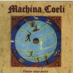

| Artist: | Machina Coeli |
| Title: | Finitor Visus Nostri |
| Label: | selfproduced/Moonchild MC9901 |
| Length(s): | 25 minutes |
| Year(s) of release: | 1999 |
| Month of review: | 01/2000 |
| 1) | Nightmare/lost Souls | 2.46 |
| A Tale: | ||
| 2) | Dawn | 2.33 |
| 3) | Victory | 3.29 |
| 4) | The Castle: Arrival, Feast And Departure | 4.50 |
| 5) | Deep Blue Waters | 2.02 |
| 6) | Revelations | 1.14 |
| 7) | Towards Orion (a Gentle Giant) | 4.52 |
| 8) | Epilogue | 3.10 |